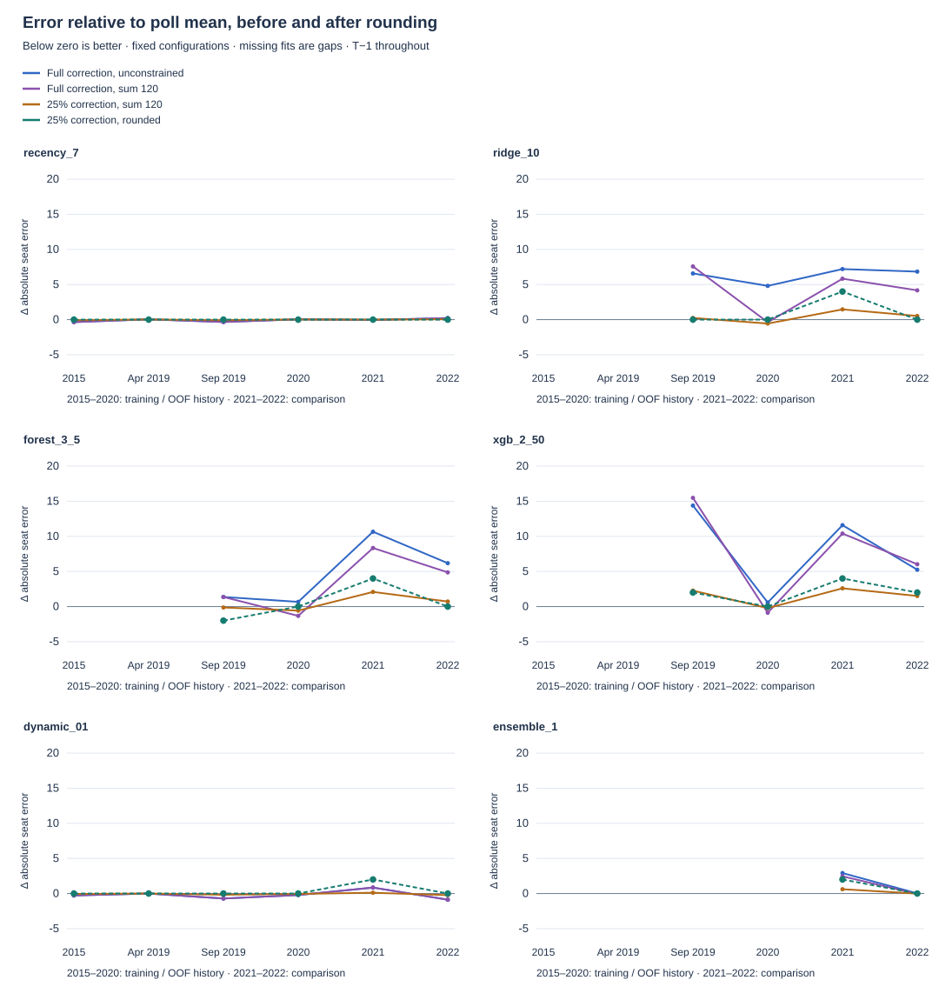
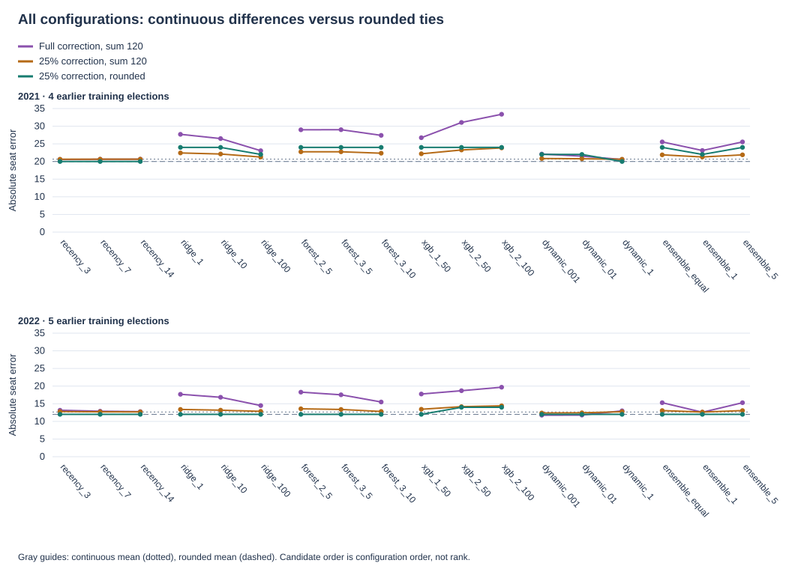

Saved E002 predictions only. No refitting, new polls, parameter selection or 2026 forecast change. Lower absolute seat error is better. Continuous scores diagnose the model; integer scores determine competition performance.
Each panel shows a fixed configuration. Zero means matching the mean's error; below zero improves it. Continuous stages compare with the continuous mean, integer stages with the rounded mean. Earlier folds have less training data. The learned ensemble starts only in 2021; earlier OOF outcomes fit its later weights.

The three stages show how different continuous predictions collapse into rounded ties. Connecting segments stay within model families and do not represent elapsed time.

All saved final scores were checked directly against the outcome snapshot. Saved shrinkage and rounded allocations were independently reproduced. Raw unconstrained predictions can violate seat totals; projected stages are the coherent continuous comparisons.